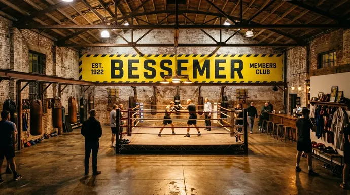
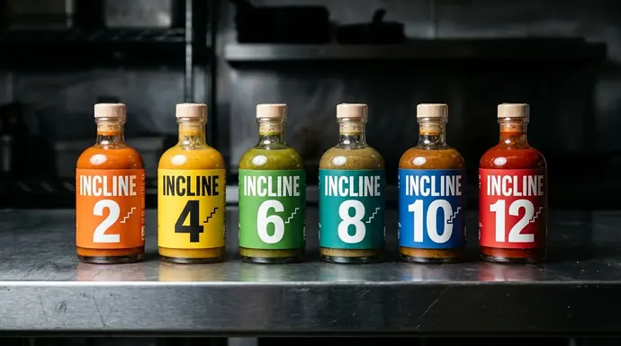
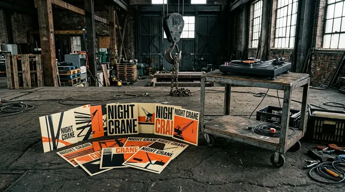
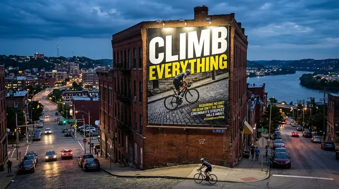
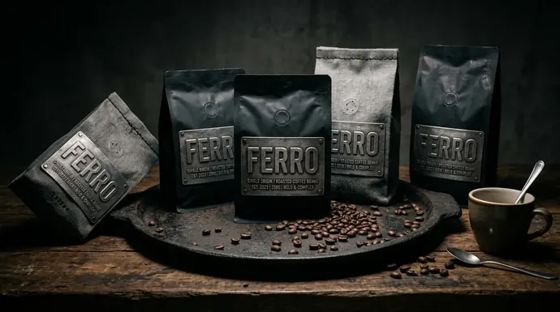
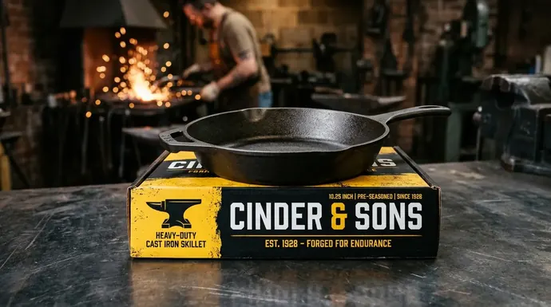

Work
Case files
Six jobs, in plain type. Same files as the desktop.

Bessemer Boxing Club
- CLIENT
- Bessemer Boxing Club
- DISCIPLINE
- BRANDS, IDENTITY, SIGNAGE
- YEAR
- 2025
Client: a boxing gym opened in the 1920s, now a members club with a bar and a waiting list. Problem: the sign said gym, the door said club, and nobody knew which one to trust. We kept the ring bell and the chipped paint. New wordmark cut from the old gym's fight-card lettering, a membership card that lives in a glove, and a front door that finally agrees with the inside. Status: the bell still rings.

Incline Hot Sauce Co.
- CLIENT
- Incline Hot Sauce Co.
- DISCIPLINE
- PACKAGING, LABELS, NAMING
- YEAR
- 2025
Client: a small-batch sauce maker with three recipes and one problem. Each sauce is named after one of the city's steepest public stairs, and the old labels looked like they had never climbed any. We built a bottle that reads in a grocery aisle from ten feet. Steps are counted on the label, heat climbs with the count, and the cap is dipped in wax. Fits the hand. Survives a dinner party.

Night Crane Records
- CLIENT
- Night Crane Records
- DISCIPLINE
- BRANDS, IDENTITY, SLEEVES
- YEAR
- 2024
Client: an indie label working out of an old freight warehouse, three bands deep and one forklift short. Brief: make a label that looks like it ships things. We drew a crane, half bird and half machine, from a loading-dock stencil and set it in two inks. One fixed sleeve grid, a new color for every release. Crate stencils from the warehouse wall became the spine strip. Each record arrives like cargo that matters.

Three Rivers Bike Works
- CLIENT
- Three Rivers Bike Works
- DISCIPLINE
- CAMPAIGNS, POSTERS, FILM
- YEAR
- 2026
Client: a bike builder and repair shop in a city with more hills than sense. Brief: sell bikes to people who say they will start in spring. The line was "Climb Everything." We wheatpasted yellow posters at the bottom of the worst hills, with the grade printed in black, and cut a thirty-second film of one rider on one stair street. By April the shop was out of small frames. Nobody said spring again.

Ferro Coffee
- CLIENT
- Ferro Coffee
- DISCIPLINE
- PACKAGING, IDENTITY
- YEAR
- 2025
Client: a roaster that still uses cast-iron drums, which is slower, heavier and, says the roaster, better. Problem: the bags looked like every other bag on the shelf. We made the drum the hero. Roast level is shown by how far the drum has turned. Two inks, a bag that stands up on steel, a tin tie you can reuse. It is the one bag on the shelf that looks heavy.

Cinder & Sons
- CLIENT
- Cinder & Sons
- DISCIPLINE
- BRANDS, PACKAGING, REFRESH
- YEAR
- 2026
Client: a fourth-generation steel fabricator that has built stairs, railings and loading docks for ninety years, now casting skillets. Problem: shoppers know the family for beams, not breakfast. We refreshed the mark, kept the sons plural, and gave the cookware a box that opens like a toolbox. Every pan ships with a card from the person who poured it. The first ad was a skillet on a steel table. Nothing else.
Concept project by Wolfgang Betancourth — wolfbc.art